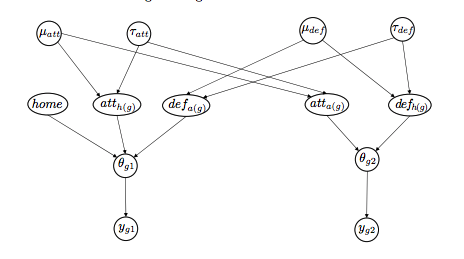

- Mon 20 January 2020
- Sports
- Rittik Ghosh
- #Monte Carlo Simulation, #Bayesian Statistics
We will use pymc3 to simulate a season of the English Premier League. The models are based on the work of Baio and Blangiardo. We are using data from the 2018-2019 season gathered from Wikipedia. In addition to this, each team was given an unique numeric identifier such as 0 for Arsenal (ARS).
Goals scored are modelled as:
$$ ygj∣θgj=Poisson(θgj) $$
Where the parameters θ = (θg1, θg2) represent the scoring intensity in the g-th game for the team playing at home (j = 1) and away (j = 2), respectively.
Thetas themselves are modelled using a log-linear model:
$$ log θg1 = home + atth(g) + defa(g) $$ $$ log θg2 = atta(g) + defh(g) $$
Scoring intensity is determined jointly by the attack and defense ability of the two teams involved, represented by the parameters att and def.
$$ attt ∼ Normal(µatt, τatt)$$, $$deft ∼ Normal(µdef , τdef ).$$
$$ µatt ∼ Normal(0, 0.0001), µdef ∼ Normal(0, 0.0001), τatt ∼ Gamma(0.1, 0.1), τdef ∼ Gamma(0.1, 0.1). $$
The home parameter represents the advantage for the team hosting the game and it is assumed that this effect is constant for all teams throughout the season.
$$ home ∼ Normal(0, 0.0001). $$

import pandas as pd
import numpy as np
import theano.tensor as tt
import pymc3 as pm
import matplotlib.pyplot as plt
import altair as alt
df = pd.read_csv('data/epl.csv')
df.head()
| Unnamed: 0 | home | away | home_score | away_score | i_home | i_away | GD | |
|---|---|---|---|---|---|---|---|---|
| 0 | 0 | ARS | BOU | 5 | 1 | 0 | 1 | 4 |
| 1 | 1 | ARS | BHA | 1 | 1 | 0 | 2 | 0 |
| 2 | 2 | ARS | BUR | 3 | 1 | 0 | 3 | 2 |
| 3 | 3 | ARS | CAR | 2 | 1 | 0 | 4 | 1 |
| 4 | 4 | ARS | CHE | 2 | 0 | 0 | 5 | 2 |
observed_home_goals = df.home_score.values
observed_away_goals = df.away_score.values
home_team = df.i_home.values
away_team = df.i_away.values
num_teams = len(df.i_home.unique())
num_games = len(home_team)
att_starting_points = np.log(df.groupby('away').away_score.mean())
def_starting_points = -np.log(df.groupby('home').away_score.mean())
with pm.Model() as model:
home = pm.Normal('home', 0, .0001)
sd_att = pm.Gamma('tau_att', .1, .1,)
sd_def = pm.Gamma('tau_def', .1, .1,)
intercept = pm.Normal('intercept', 0, .0001)
atts_star = pm.Normal("atts_star", mu=0, sigma=sd_att, shape=num_teams)
defs_star = pm.Normal("defs_star", mu=0, sigma=sd_def, shape=num_teams)
# We are subtracting the mean to enforce a sum to zero constraint as recommended by the authors.
atts = pm.Deterministic('atts', atts_star - tt.mean(atts_star))
defs = pm.Deterministic('defs', defs_star - tt.mean(defs_star))
home_theta = np.exp(intercept + home + atts[home_team] + defs[away_team])
away_theta = np.exp(intercept + atts[away_team] + defs[home_team])
home_goals = pm.Poisson('home_goals', mu=home_theta, observed=observed_home_goals)
away_goals = pm.Poisson('away_goals', mu=away_theta, observed=observed_away_goals)
trace = pm.sample(10000, tune=1500, chains=2)
Auto-assigning NUTS sampler...
Initializing NUTS using jitter+adapt_diag...
Multiprocess sampling (2 chains in 2 jobs)
NUTS: [defs_star, atts_star, intercept, tau_def, tau_att, home]
Sampling 2 chains, 0 divergences: 100%|██████████| 23000/23000 [01:03<00:00, 362.06draws/s]
pm.traceplot(trace, var_names=['intercept', 'home', 'tau_att', 'tau_def']);
/anaconda3/lib/python3.6/site-packages/arviz/plots/backends/matplotlib/distplot.py:38: UserWarning: Argument backend_kwargs has not effect in matplotlib.plot_distSupplied value won't be used
"Argument backend_kwargs has not effect in matplotlib.plot_dist"
/anaconda3/lib/python3.6/site-packages/arviz/plots/backends/matplotlib/distplot.py:38: UserWarning: Argument backend_kwargs has not effect in matplotlib.plot_distSupplied value won't be used
"Argument backend_kwargs has not effect in matplotlib.plot_dist"
/anaconda3/lib/python3.6/site-packages/arviz/plots/backends/matplotlib/distplot.py:38: UserWarning: Argument backend_kwargs has not effect in matplotlib.plot_distSupplied value won't be used
"Argument backend_kwargs has not effect in matplotlib.plot_dist"
/anaconda3/lib/python3.6/site-packages/arviz/plots/backends/matplotlib/distplot.py:38: UserWarning: Argument backend_kwargs has not effect in matplotlib.plot_distSupplied value won't be used
"Argument backend_kwargs has not effect in matplotlib.plot_dist"
teams = df.home.unique()
teams = pd.DataFrame(teams, columns=['team'])
teams['i'] = teams.index
teams.T
| 0 | 1 | 2 | 3 | 4 | 5 | 6 | 7 | 8 | 9 | 10 | 11 | 12 | 13 | 14 | 15 | 16 | 17 | 18 | 19 | |
|---|---|---|---|---|---|---|---|---|---|---|---|---|---|---|---|---|---|---|---|---|
| team | ARS | BOU | BHA | BUR | CAR | CHE | CRY | EVE | FUL | HUD | LEI | LIV | MCI | MUN | NEW | SOU | TOT | WAT | WHU | WOL |
| i | 0 | 1 | 2 | 3 | 4 | 5 | 6 | 7 | 8 | 9 | 10 | 11 | 12 | 13 | 14 | 15 | 16 | 17 | 18 | 19 |
defs=pd.DataFrame(pm.summary(trace).tail(40)['mean']).reset_index().tail(20)
atts=pd.DataFrame(pm.summary(trace).tail(40)['mean']).reset_index().head(20)
data=pd.merge(atts, teams, left_on=atts.index, right_on="i")
data=pd.merge(data, defs, left_on=data.index, right_on=defs.index-20)
alt.Chart(data).mark_point().encode(
alt.X('mean_x', axis=alt.Axis(title="Mean attack effect")),
alt.Y('mean_y', axis=alt.Axis(title="Mean defense effect")),
color='team:N',
tooltip=['team:N']
).properties(
width=500,
height=500
)
As expected top teams (Manchester City & Liverpool) are at the bottom right. These teams have very high positive attack effects and a very negative defense effect. This will lead to very. high scoring intensity in our model.
Now that we have our posterior distributions, we can sample from them to simulate a season.
with model:
sim = pm.sample_posterior_predictive(trace)
100%|██████████| 20000/20000 [00:35<00:00, 558.00it/s]
home_goals=pd.DataFrame(sim['home_goals']).T
home_goals.insert(0,"team", df['home'])
away_goals=pd.DataFrame(sim['home_goals']).T
away_goals.insert(0,"team", df['away'])
total_goals=home_goals.groupby('team').sum().add(away_goals.groupby('team').sum())
plt.figure(figsize=(8,8))
plt.hist(total_goals.loc['CHE'], bins=10, alpha=0.35, label="Chelsea");
plt.hist(total_goals.loc['LIV'], bins=10, alpha=0.35, label="Liverpool FC");
plt.hist(total_goals.loc['MCI'], bins=10, alpha=0.35, label="Manchester city");
plt.legend()
plt.title("Total Goals scored (20,000 simulations)");
goal_diff=sim['home_goals']-sim['away_goals']
condlist = [goal_diff>0, goal_diff==0]
choicelist = [3, 1]
goal_diff=np.select(condlist, choicelist)
points=pd.DataFrame(goal_diff).T
points.insert(0,"away_team", df['away'])
points.insert(0,"home_team", df['home'])
points
| home_team | away_team | 0 | 1 | 2 | 3 | 4 | 5 | 6 | 7 | ... | 19990 | 19991 | 19992 | 19993 | 19994 | 19995 | 19996 | 19997 | 19998 | 19999 | |
|---|---|---|---|---|---|---|---|---|---|---|---|---|---|---|---|---|---|---|---|---|---|
| 0 | ARS | BOU | 3 | 3 | 1 | 3 | 3 | 3 | 0 | 3 | ... | 0 | 0 | 0 | 0 | 1 | 3 | 0 | 1 | 0 | 3 |
| 1 | ARS | BHA | 0 | 1 | 1 | 3 | 3 | 3 | 3 | 3 | ... | 3 | 3 | 3 | 0 | 3 | 3 | 0 | 1 | 0 | 3 |
| 2 | ARS | BUR | 3 | 3 | 0 | 1 | 1 | 3 | 3 | 1 | ... | 0 | 3 | 1 | 3 | 3 | 0 | 0 | 3 | 0 | 3 |
| 3 | ARS | CAR | 3 | 0 | 1 | 3 | 3 | 3 | 3 | 3 | ... | 3 | 1 | 3 | 3 | 1 | 3 | 3 | 3 | 1 | 3 |
| 4 | ARS | CHE | 0 | 3 | 1 | 3 | 0 | 0 | 0 | 3 | ... | 1 | 0 | 0 | 3 | 0 | 3 | 3 | 0 | 0 | 0 |
| ... | ... | ... | ... | ... | ... | ... | ... | ... | ... | ... | ... | ... | ... | ... | ... | ... | ... | ... | ... | ... | ... |
| 375 | WOL | NEW | 0 | 1 | 1 | 1 | 0 | 3 | 1 | 0 | ... | 3 | 1 | 1 | 1 | 3 | 1 | 1 | 3 | 1 | 3 |
| 376 | WOL | SOU | 1 | 3 | 3 | 3 | 3 | 3 | 1 | 3 | ... | 0 | 3 | 3 | 0 | 3 | 1 | 3 | 1 | 3 | 1 |
| 377 | WOL | TOT | 0 | 0 | 0 | 3 | 0 | 0 | 3 | 3 | ... | 0 | 1 | 0 | 3 | 0 | 0 | 0 | 1 | 0 | 0 |
| 378 | WOL | WAT | 3 | 1 | 3 | 0 | 1 | 3 | 1 | 1 | ... | 3 | 1 | 3 | 3 | 3 | 3 | 1 | 1 | 3 | 1 |
| 379 | WOL | WHU | 3 | 1 | 1 | 1 | 3 | 3 | 1 | 1 | ... | 1 | 1 | 0 | 3 | 1 | 1 | 1 | 1 | 0 | 3 |
380 rows × 20002 columns
The table above represents the points scored per game for each of our 20,000 simulated seasons.
(Each simulated season is a column) Below we continue to explore the results of our simulation.
Total points scored per team per simulated season:
points=points.groupby('home_team').sum()
points
| 0 | 1 | 2 | 3 | 4 | 5 | 6 | 7 | 8 | 9 | ... | 19990 | 19991 | 19992 | 19993 | 19994 | 19995 | 19996 | 19997 | 19998 | 19999 | |
|---|---|---|---|---|---|---|---|---|---|---|---|---|---|---|---|---|---|---|---|---|---|
| home_team | |||||||||||||||||||||
| ARS | 37 | 28 | 25 | 41 | 34 | 29 | 20 | 34 | 31 | 32 | ... | 33 | 23 | 29 | 35 | 37 | 25 | 29 | 33 | 20 | 36 |
| BHA | 20 | 23 | 14 | 23 | 19 | 18 | 19 | 21 | 7 | 18 | ... | 22 | 23 | 17 | 20 | 19 | 15 | 17 | 15 | 23 | 14 |
| BOU | 20 | 21 | 21 | 26 | 25 | 26 | 20 | 17 | 33 | 25 | ... | 31 | 27 | 32 | 17 | 23 | 28 | 27 | 22 | 20 | 32 |
| BUR | 19 | 14 | 15 | 21 | 20 | 14 | 17 | 26 | 17 | 14 | ... | 19 | 27 | 23 | 17 | 17 | 18 | 25 | 13 | 11 | 21 |
| CAR | 20 | 15 | 20 | 20 | 14 | 6 | 16 | 20 | 18 | 17 | ... | 11 | 21 | 15 | 19 | 13 | 7 | 23 | 28 | 10 | 21 |
| CHE | 39 | 27 | 33 | 31 | 43 | 25 | 39 | 36 | 33 | 43 | ... | 29 | 31 | 29 | 32 | 37 | 27 | 34 | 39 | 32 | 40 |
| CRY | 23 | 26 | 24 | 28 | 20 | 46 | 24 | 37 | 18 | 18 | ... | 31 | 14 | 22 | 27 | 20 | 29 | 33 | 27 | 29 | 15 |
| EVE | 23 | 30 | 22 | 26 | 28 | 34 | 32 | 22 | 24 | 27 | ... | 36 | 23 | 27 | 25 | 34 | 23 | 12 | 36 | 20 | 35 |
| FUL | 10 | 10 | 8 | 15 | 13 | 4 | 8 | 5 | 17 | 10 | ... | 14 | 18 | 13 | 14 | 10 | 15 | 9 | 10 | 12 | 12 |
| HUD | 19 | 25 | 4 | 8 | 8 | 10 | 10 | 11 | 12 | 4 | ... | 11 | 12 | 11 | 9 | 9 | 9 | 14 | 15 | 1 | 7 |
| LEI | 20 | 28 | 35 | 23 | 30 | 29 | 32 | 36 | 18 | 22 | ... | 26 | 19 | 24 | 19 | 38 | 23 | 28 | 31 | 26 | 27 |
| LIV | 50 | 46 | 46 | 46 | 47 | 40 | 48 | 47 | 44 | 48 | ... | 40 | 39 | 43 | 42 | 53 | 40 | 35 | 48 | 39 | 50 |
| MCI | 46 | 39 | 37 | 44 | 40 | 40 | 43 | 46 | 49 | 53 | ... | 44 | 37 | 46 | 46 | 53 | 40 | 41 | 46 | 43 | 48 |
| MUN | 36 | 38 | 29 | 36 | 25 | 36 | 26 | 24 | 41 | 27 | ... | 30 | 24 | 22 | 25 | 37 | 23 | 37 | 30 | 25 | 30 |
| NEW | 23 | 22 | 30 | 21 | 24 | 25 | 29 | 28 | 19 | 13 | ... | 29 | 29 | 25 | 20 | 20 | 34 | 27 | 27 | 18 | 12 |
| SOU | 17 | 20 | 29 | 11 | 26 | 20 | 19 | 24 | 24 | 28 | ... | 21 | 14 | 28 | 20 | 17 | 21 | 13 | 22 | 14 | 25 |
| TOT | 32 | 36 | 30 | 39 | 31 | 25 | 44 | 33 | 46 | 39 | ... | 44 | 27 | 32 | 28 | 32 | 34 | 34 | 29 | 35 | 36 |
| WAT | 25 | 18 | 19 | 28 | 22 | 26 | 29 | 22 | 25 | 38 | ... | 22 | 31 | 21 | 23 | 18 | 24 | 30 | 29 | 24 | 21 |
| WHU | 35 | 32 | 23 | 24 | 26 | 23 | 27 | 13 | 20 | 22 | ... | 27 | 24 | 29 | 24 | 24 | 32 | 28 | 30 | 25 | 37 |
| WOL | 26 | 33 | 25 | 36 | 32 | 26 | 32 | 20 | 33 | 21 | ... | 21 | 22 | 20 | 33 | 25 | 18 | 18 | 32 | 26 | 26 |
20 rows × 20000 columns
League ranking per team per simulated season:
points=points.rank(ascending=False, method='min', axis=0)
points
| 0 | 1 | 2 | 3 | 4 | 5 | 6 | 7 | 8 | 9 | ... | 19990 | 19991 | 19992 | 19993 | 19994 | 19995 | 19996 | 19997 | 19998 | 19999 | |
|---|---|---|---|---|---|---|---|---|---|---|---|---|---|---|---|---|---|---|---|---|---|
| home_team | |||||||||||||||||||||
| ARS | 4.0 | 8.0 | 9.0 | 3.0 | 4.0 | 6.0 | 13.0 | 6.0 | 8.0 | 6.0 | ... | 5.0 | 11.0 | 5.0 | 3.0 | 4.0 | 9.0 | 8.0 | 5.0 | 12.0 | 5.0 |
| BHA | 13.0 | 13.0 | 18.0 | 13.0 | 17.0 | 16.0 | 15.0 | 14.0 | 20.0 | 14.0 | ... | 13.0 | 11.0 | 17.0 | 12.0 | 14.0 | 17.0 | 16.0 | 17.0 | 11.0 | 17.0 |
| BOU | 13.0 | 15.0 | 14.0 | 10.0 | 11.0 | 8.0 | 13.0 | 17.0 | 5.0 | 10.0 | ... | 6.0 | 6.0 | 3.0 | 17.0 | 11.0 | 7.0 | 11.0 | 15.0 | 12.0 | 8.0 |
| BUR | 17.0 | 19.0 | 17.0 | 15.0 | 15.0 | 17.0 | 17.0 | 9.0 | 17.0 | 17.0 | ... | 17.0 | 6.0 | 12.0 | 17.0 | 16.0 | 15.0 | 13.0 | 19.0 | 18.0 | 13.0 |
| CAR | 13.0 | 18.0 | 15.0 | 17.0 | 18.0 | 19.0 | 18.0 | 15.0 | 14.0 | 16.0 | ... | 19.0 | 15.0 | 18.0 | 15.0 | 18.0 | 20.0 | 14.0 | 12.0 | 19.0 | 13.0 |
| CHE | 3.0 | 10.0 | 4.0 | 7.0 | 2.0 | 11.0 | 4.0 | 4.0 | 5.0 | 3.0 | ... | 9.0 | 3.0 | 5.0 | 5.0 | 4.0 | 8.0 | 4.0 | 3.0 | 4.0 | 3.0 |
| CRY | 10.0 | 11.0 | 11.0 | 8.0 | 15.0 | 1.0 | 12.0 | 3.0 | 14.0 | 14.0 | ... | 6.0 | 18.0 | 13.0 | 7.0 | 12.0 | 6.0 | 6.0 | 13.0 | 5.0 | 16.0 |
| EVE | 10.0 | 7.0 | 13.0 | 10.0 | 8.0 | 5.0 | 5.0 | 12.0 | 10.0 | 8.0 | ... | 4.0 | 11.0 | 9.0 | 8.0 | 7.0 | 11.0 | 19.0 | 4.0 | 12.0 | 7.0 |
| FUL | 20.0 | 20.0 | 19.0 | 18.0 | 19.0 | 20.0 | 20.0 | 20.0 | 17.0 | 19.0 | ... | 18.0 | 17.0 | 19.0 | 19.0 | 19.0 | 17.0 | 20.0 | 20.0 | 17.0 | 18.0 |
| HUD | 17.0 | 12.0 | 20.0 | 20.0 | 20.0 | 18.0 | 19.0 | 19.0 | 19.0 | 20.0 | ... | 19.0 | 20.0 | 20.0 | 20.0 | 20.0 | 19.0 | 17.0 | 17.0 | 20.0 | 20.0 |
| LEI | 13.0 | 8.0 | 3.0 | 13.0 | 7.0 | 6.0 | 5.0 | 4.0 | 14.0 | 11.0 | ... | 12.0 | 16.0 | 11.0 | 15.0 | 3.0 | 11.0 | 9.0 | 7.0 | 6.0 | 10.0 |
| LIV | 1.0 | 1.0 | 1.0 | 1.0 | 1.0 | 2.0 | 1.0 | 1.0 | 3.0 | 2.0 | ... | 3.0 | 1.0 | 2.0 | 2.0 | 1.0 | 1.0 | 3.0 | 1.0 | 2.0 | 1.0 |
| MCI | 2.0 | 2.0 | 2.0 | 2.0 | 3.0 | 2.0 | 3.0 | 2.0 | 1.0 | 1.0 | ... | 1.0 | 2.0 | 1.0 | 1.0 | 1.0 | 1.0 | 1.0 | 2.0 | 1.0 | 2.0 |
| MUN | 5.0 | 3.0 | 7.0 | 5.0 | 11.0 | 4.0 | 11.0 | 10.0 | 4.0 | 8.0 | ... | 8.0 | 9.0 | 13.0 | 8.0 | 4.0 | 11.0 | 2.0 | 8.0 | 8.0 | 9.0 |
| NEW | 10.0 | 14.0 | 5.0 | 15.0 | 13.0 | 11.0 | 8.0 | 8.0 | 13.0 | 18.0 | ... | 9.0 | 5.0 | 10.0 | 12.0 | 12.0 | 3.0 | 11.0 | 13.0 | 15.0 | 18.0 |
| SOU | 19.0 | 16.0 | 7.0 | 19.0 | 9.0 | 15.0 | 15.0 | 10.0 | 10.0 | 7.0 | ... | 15.0 | 18.0 | 8.0 | 12.0 | 16.0 | 14.0 | 18.0 | 15.0 | 16.0 | 12.0 |
| TOT | 7.0 | 4.0 | 5.0 | 4.0 | 6.0 | 11.0 | 2.0 | 7.0 | 2.0 | 4.0 | ... | 1.0 | 6.0 | 3.0 | 6.0 | 8.0 | 3.0 | 4.0 | 10.0 | 3.0 | 5.0 |
| WAT | 9.0 | 17.0 | 16.0 | 8.0 | 14.0 | 8.0 | 8.0 | 12.0 | 9.0 | 5.0 | ... | 13.0 | 3.0 | 15.0 | 11.0 | 15.0 | 10.0 | 7.0 | 10.0 | 10.0 | 13.0 |
| WHU | 6.0 | 6.0 | 12.0 | 12.0 | 9.0 | 14.0 | 10.0 | 18.0 | 12.0 | 11.0 | ... | 11.0 | 9.0 | 5.0 | 10.0 | 10.0 | 5.0 | 9.0 | 8.0 | 8.0 | 4.0 |
| WOL | 8.0 | 5.0 | 9.0 | 5.0 | 5.0 | 8.0 | 5.0 | 15.0 | 5.0 | 13.0 | ... | 15.0 | 14.0 | 16.0 | 4.0 | 9.0 | 15.0 | 15.0 | 6.0 | 6.0 | 11.0 |
20 rows × 20000 columns
mci=alt.Chart(pd.DataFrame(points.loc['MCI'].value_counts().head()).reset_index()).mark_bar().encode(
alt.X('MCI:Q', axis=alt.Axis(title="Manchester City")),
alt.Y('index:N', axis=alt.Axis(title="League Position"))).properties(width=300,height=100)
liv=alt.Chart(pd.DataFrame(points.loc['LIV'].value_counts().head()).reset_index()).mark_bar().encode(
alt.X('LIV:Q', axis=alt.Axis(title="Liverpool")),
alt.Y('index:N', axis=alt.Axis(title="League Position"))).properties(width=300,height=100)
che=alt.Chart(pd.DataFrame(points.loc['CHE'].value_counts().head()).reset_index()).mark_bar().encode(
alt.X('CHE:Q', axis=alt.Axis(title="Chelsea")),
alt.Y('index:N', axis=alt.Axis(title="League Position"))).properties(width=300,height=100)
mci| liv | che
In our simulations, Manchester City ranked first over 10,500 times. Liverpool came in a close second. For Chelsea, the most commonly occuring position seems to be thrid.
Probability of finishing in the top 5
top5=points.applymap(lambda x: x<=5).sum(axis=1)
top5=pd.DataFrame(top5/20000, columns=['prob']).reset_index()
top5.sort_values(by='prob', ascending=False ,inplace=True)
alt.Chart(top5).mark_bar().encode(
alt.X('prob:Q', axis=alt.Axis(title="Probability of finishing in the top 5")),
alt.Y('home_team:N', axis=alt.Axis(title="Team"))).properties(width=700,height=900)